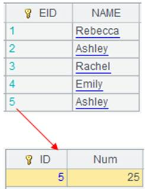
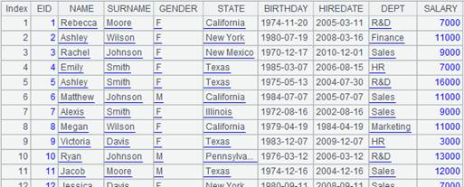

Description:
Calculate Mahalanobis distance between two vectors on covariance matrix.
Syntax:
dism(X,Y,C)
Note:
The external library function (See External Library Guide) computes Mahalanobis distance between vector X and vector Y on covariance matrix C. There is a same number of columns in vector X /Y and covariance matrix C.
Parameter:
|
X/Y |
Vectors of same dimension with the covariance matrix C |
|
C |
A covariance matrix |
Return value:
Numeric value
Example:
|
|
A |
|
|
1 |
[[1, 0, 2], [-1, 5, 0], [0, 3, -9], [3, 2, 4], [-1, 1, 2]] |
 Generate a matrix containing five samples. |
|
2 |
=covm(A1) |
Calculate the general covariance matrix. |
|
3 |
=dism(A1(1),A1(3),A2) |
 Calcualte Mahalanobis distance between the 1st sample and the 3rd sample. |